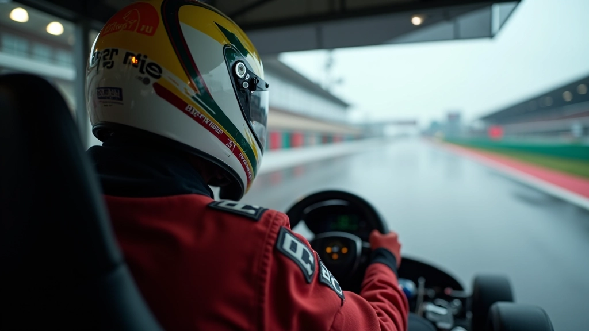
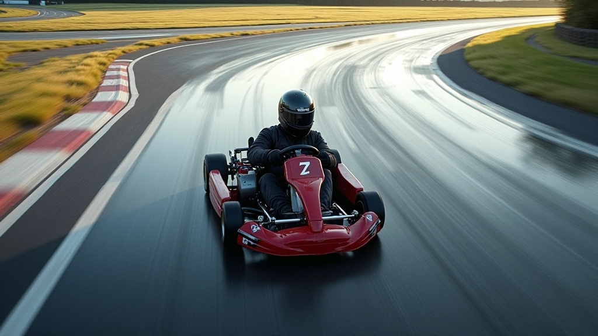
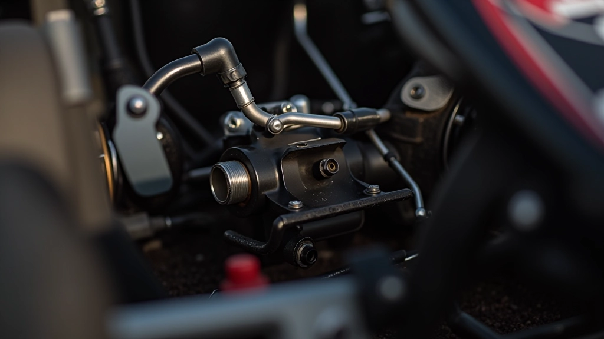
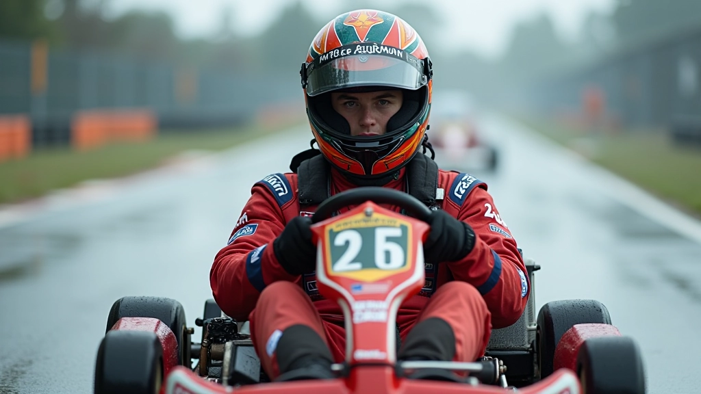

أساسيات التحكم بالكارت على الأسفلت المبلل
تعلّم المبادئ الأساسية لضبط المقود والتعامل مع فقدان الجر، مع التركيز على تقنيات التحكم الأولية والثقة بالنفس.
اقرأ المزيدإتقان فنون التحكم والثقة عند القيادة على المسارات المبللة — من التسارع الذكي إلى المناورات الجريئة

عندما يتعلق الأمر بالقيادة على المسارات المبللة، الفرق بين سائق عادي وسائق متقدم ليس فقط في السرعة. إنّه في الذكاء والثقة والقدرة على اتخاذ قرارات سريعة تحت الضغط. نحن هنا نساعدك على الانتقال من مرحلة الخوف من الانزلاق إلى استخدام خصائص السطح المبلل لصالحك.
ستتعلم كيفية توزيع القوة بحكمة، ومتى تكون جريئًا ومتى تكون حذرًا، وكيفية قراءة سلوك السيارة في ظروف صعبة. هذه التقنيات ستغيّر طريقة تعاملك مع كل منعطف.

على الأسفلت المبلل، التسارع ليس مجرد الضغط على البنزين. الأمر يتعلق بتوزيع القوة بذكاء عبر مراحل المنعطف.
عند الدخول للمنعطف، لا تزيد من السرعة بشكل مفاجئ. استخدم نقطة قيادة واضحة — هذه النقطة حيث تبدأ برفع عجلة القيادة. قبل هذه النقطة، حافظ على ثبات السرعة. بعدها، ابدأ بزيادة التسارع بتدرج سلس.
الخطأ الشائع؟ الضغط على الدواسة بكل قوتك فور الدخول. هذا سيسبب انزلاق العجلات الخلفية. بدلاً من ذلك، ركّز على التسارع التدريجي — 25% في البداية، ثم 50%، ثم الضغط الكامل إن أمكن. هذا الأسلوب يعطيك التحكم الكامل ويحافظ على الجر.


الخط الأمثل ليس دائمًا هو الخط الذي تتخيله. على المسار المبلل، عليك أن تفهم أين توجد أفضل الجر.
البقع الجافة نسبيًا عادة ما تكون على أطراف المسار — حيث تمر عجلات أقل. في الوسط، حيث يمر معظم السائقين، يكون السطح أكثر زلقًا. لذا، لا تخاف من استخدام عرض المسار بكامله. ادخل من الخارج، اقطع الجزء الداخلي من المنعطف، واخرج من الخارج. هذا يعطيك نصف قطر أكبر وسرعة أعلى.
الشيء المهم: راقب دائمًا سلوك الإطارات. إذا شعرت بانزلاق طفيف في البداية، هذا طبيعي. لكن إذا استمر الانزلاق أو ساء، قلّل السرعة قليلاً وعدّل خطك.


الكبح على الأسفلت المبلل يتطلب جرأة مختلفة عن الكبح العادي. لا تخاف من الكبح القوي — لكن افعله بذكاء.
المفتاح هو الكبح المبكر. ابدأ بالكبح قبل المنعطف بمسافة أطول قليلاً مما تعتقد أنك تحتاج. هذا يعطيك مساحة للتفاعل إذا حدث انزلاق. عندما تكبح، افعل ذلك بخط مستقيم — تجنب الكبح أثناء الدوران. إذا اضطررت للكبح في المنعطف، افعله بحذر وتدريج.
هناك تقنية متقدمة تسمى "الكبح مع الانجراف" — حيث تكبح بقوة ثم تترك قليلاً من الضغط لتسمح للسيارة بالانجراف بزاوية صحيحة. هذا يتطلب ممارسة، لكن عندما تتقنها، ستلاحظ أنك تخرج من المنعطفات أسرع.


الكثير من السائقين ينسون أن الجسم هو جزء من السيارة. وضعيتك تؤثر على كيفية استجابة الكارت.
احرص على الجلوس بشكل مستقيم وممركز في الكارت. إذا انحنيت للأمام، ستضيف وزنًا على العجلات الأمامية وقد تفقد الجر في الخلف. إذا اتكأت للخلف، الوضع يسوء. على المسارات المبللة، يكون التوازن حرجًا — حتى بضعة سنتيمترات تحدث فرقًا.
عندما تدخل منعطفًا، حرك وزنك قليلاً نحو الخارج. هذا يساعد في توزيع الوزن بشكل أفضل ويزيد من الجر. لكن لا تبالغ — الحركات الصغيرة والسلسة أفضل من الحركات المفاجئة.
المعلومات المقدمة في هذا المقال هي لأغراض تعليمية وإعلامية فقط. ممارسة الكارتينج تتطلب اتباع جميع معايير السلامة والتعليمات المقدمة من مسؤولي الحلبة والمدربين المعتمدين. يُنصح دائمًا باستشارة خبراء محترفين قبل تطبيق أي تقنيات متقدمة. مضمار السرعة لا تتحمل مسؤولية أي إصابات أو أضرار قد تنتج عن سوء استخدام المعلومات الواردة هنا.
القيادة على المسارات المبللة ليست عن عدم الخوف — إنها عن فهم الخوف وإدارته. الجرأة بدون ذكاء تؤدي لحوادث. الذكاء بدون جرأة يجعلك بطيئًا.
ما تعلمته اليوم — إدارة التسارع، قراءة الخط، تقنية الكبح، والتوازن — ستبني أساسًا قويًا. لكن الحقيقة هي أن إتقان هذه التقنيات يأتي من الممارسة. كل مرة تنزل للمسار، تكون فرصة لتتعلم شيئًا جديدًا عن السيارة وعن نفسك.
ابدأ بالتطبيق البطيء. ركّز على نقطة واحدة في المرة — قد تكون التسارع اليوم والكبح غدًا. بعد أسابيع قليلة، ستجد أن كل هذه العناصر تعمل معًا بسلاسة. وعندها، ستشعر بالحقيقة — تلك اللحظة عندما يصبح كل شيء سهلاً، وتكون سريعًا، وتثق بنفسك تماما.
هذه هي القيادة المتقدمة.